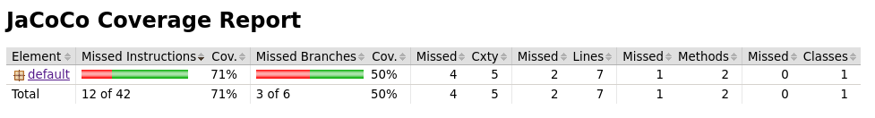
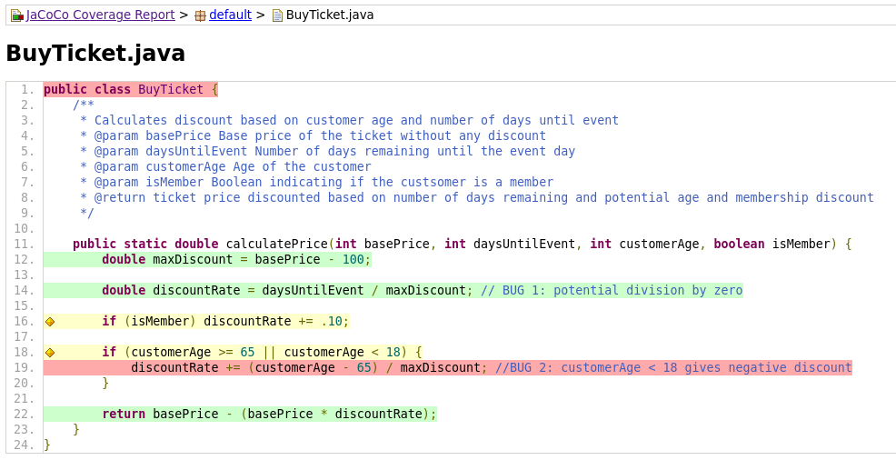
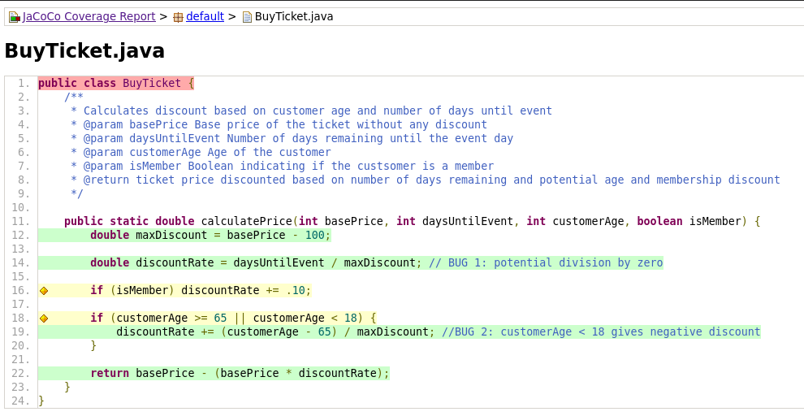

Coverage - A Metric for Test Suite Quality
In CS151, I grade students’ JUnit test suites based on an automatically collected metric called coverage. The intuition behind code coverage is: untested parts of the code may still contain faults. If your test suite doesn’t execute certain sections of the program, potential mistakes in those areas can go undetected.
Coverage is a metric which measures the degree to which the source code of a program is executed when a particular test suite is run. A program with high code coverage has more of its source code executed during testing, which suggests it has a lower chance of containing undetected software bugs compared to a program with low code coverage.
Code coverage is a widely respected test quality metric, and achieving high coverage is required in many industries. For example, test suites and their coverage percentages are required to be submitted to the Federal Aviation Administration under airborne software safety laws. However, you will see that code coverage is not a perfect measure of correctness. A test suite with 100% coverage can still miss bugs, as it does not guarantee that all edge cases or logic flaws are exercised.
In this reading, we will learn how to measure code coverage using Jacoco. I will introduce different kinds of coverage and illustrate their strengths and weaknesses. My goal is for you to use this information as a tool to improve your test suites and code quality, while tempering the false sense of security that coverage alone can provide. All code and scripts discussed are available at: https://github.com/elizabethdinella/code-coverage
Consider the following running example for calculating a ticket price to an event. The ticket price is discounted if you buy in advance. It applies a time-based discount proportional to the days until the event. For example, on a $150 ticket, buying a ticket 10 days before the event will apply a 20% discount while buying a ticket 1 day before the event will apply a 2% discount. A further 10% discount is applied if the customer is a member. Lastly, ticket price is also discounted for senior citizens (65+) and minors (under 18). This discount is also proportional. A 75 year old customer will receive a 20% discount on a $150 ticket while an 85 year old customer will receive a 40% discount.
public class BuyTicket {
/**
* Calculates discount based on customer age and number of days until event
* @param basePrice Base price of the ticket without any discount
* @param daysUntilEvent Number of days remaining until the event day
* @param customerAge Age of the customer
* @param isMember Boolean indicating if the custsomer is a member
* @return ticket price discounted based on number of days remaining and potential age and membership discount
*/
public static double calculatePrice(int basePrice, int daysUntilEvent, int customerAge, boolean isMember) {
double maxDiscount = basePrice - 100;
double discountRate = daysUntilEvent / maxDiscount; // BUG 1: potential division by zero
if (isMember) discountRate += .10;
if (customerAge >= 65 || customerAge < 18) {
discountRate += (customerAge - 65) / maxDiscount; //BUG 2: customerAge < 18 gives negative discount
}
return basePrice - (basePrice * discountRate);
}
}
Notice that there are two bugs. First, a divide by zero error (ArithmeticException) can occur on line 14 when calculating the price for a ticket purchase on the day of the event ( daysUntilEvent = 0 ). Secondly, line 19 calculates a proportional age discount for senior citizens, but does not correctly calculate a discount for minors. For a customerAge < 18 , the discountRate becomes negative. We will use these bugs to motivate different types of coverage metrics and to illustrate that coverage is not a perfect metric for correctness. You will see that even a test suite with perfect coverage can miss these bugs.
Now, consider the following JUnit test suite which executes two cases:
import org.junit.Test;
import static org.junit.Assert.assertEquals;
public class TestBuyTicket {
@Test
public void testWeekInAdvance() {
int basePrice = 150;
int daysUntilEvent = 7;
int customerAge = 28;
boolean isMember = true;
double price = BuyTicket.calculatePrice(basePrice, daysUntilEvent, customerAge, isMember);
double expectedDiscount = basePrice * .24; //.14 discount for 7 days in advance + .10 discount for member
assertEquals(basePrice - expectedDiscount, price, 0.0);
}
@Test
public void testDayOf() {
int basePrice = 150;
int daysUntilEvent = 0;
int customerAge = 31;
boolean isMember = true;
double price = BuyTicket.calculatePrice(basePrice, daysUntilEvent, customerAge, isMember);
double expectedDiscount = basePrice * .10; //.10 discount for membership
assertEquals(basePrice - expectedDiscount, price, 0.0);
}
}
Before we can run these tests, you’ll need to download some dependencies. I recommend you do the following setup steps:
1. Clone the git repo for this reading:
git clone git@github.com:elizabethdinella/code-coverage.git
2. Create a lib/ directory to store jar files
cd code-coverage && mkdir lib && cd lib
3. Download Junit:
wget https://repo1.maven.org/maven2/junit/junit/4.13.2/junit-4.13.2.jar
4. Download Hamcrest:
wget https://repo1.maven.org/maven2/org/hamcrest/hamcrest-core/1.3/hamcrest-core-1.3.jar
I’ve included a run_tests.sh bash script in the git repo, which runs JUnit tests in the usual way. To ensure you have everything set up correctly, run bash run_tests.sh. You should see:
JUnit version 4.13.2
..
Time: 0.003
OK (2 tests)
This tells us that the implementation of calculatePrice meets the specification described with the two test cases. Notice that our test suite did not trigger either of the bugs. Just because our tests pass, doesn’t mean our code is correct! It is only correct on the specific inputs which we tested. Now, let’s measure the quality of our test suite using code coverage. To do this, we will use the tool jacoco. This will require some additional setup:
1. Navigate to the code-coverage directory
2. Download jacoco zip file
wget https://repo1.maven.org/maven2/org/jacoco/jacoco/0.8.10/jacoco-0.8.10.zip
3. unzip jacoco
unzip jacoco-0.8.10.zip -d jacoco
Run bash run_coverage.sh to generate a coverage report which measure the quality of our test suite. Open the coverage report (coverage-report/index.html) in your browser of choice. You should see something like this:

In this reading, I will discuss different types of coverage metrics, but for now, let’s look at the simplest: line coverage. Line coverage is reported in the 5th column. The given test suite covered 5 out of the 7 lines of code and missed 2. Click on the file name in the first column to see a visual representation of which lines were missed.

Line 19 is marked in red indicating that it was not covered. This makes sense because in our two tests, the customer ages were 28 and 31 which do not qualify for an age discount and the if-statement on line 18 evaluates to false.
Line 1 is also marked in red, but we can ignore this for now since we are testing the BuyTicket method instead of the class. (we will learn more about object oriented testing later in the course).
Exercise: add an additional test for a senior citizen discount to increase total coverage. A customer who is 70 years old and a member should incur a discount of 20% on a day-of ticket purchase with a base price of $150. Write this case as a JUnit test and add it to the test/TestBuyTicket file.
Now, when we re-run the run_coverage script, our report should reflect that we have covered line 19. No lines in the calculatePrice method should be highlighted in red. Congrats! Your test suite has covered 100% of lines in this method.
Code coverage can be measured in various ways, each relating to the coverage of different program elements. The coverage metric we just explored is called line coverage, which measures the number of lines executed divided by the total number of lines in the method under test. Even with 100% line coverage, certain bugs may still go undetected, as illustrated by our example. While all tests may pass, the bugs remain unfound! This emphasizes that while line coverage is useful for pinpointing untested areas of your code, it doesn't guarantee that all bugs have been identified.
Beyond Covering Lines
Now, let's explore other coverage metrics and examine how effectively they correlate with bug detection. To do so, let’s focus on BUG 2 which is executed when the customer age is less than 18. Our tests only covered cases with ages greater than 18. Although we executed the age discount condition in lines 18-20, we only executed the first predicate of the or statement. A finer grained metric of coverage which measures the predicate coverage would have reported this discrepancy. Branch coverage measures exactly this - whether each possible branch in every decision structure (e.g., if, else, switch cases) has been executed at least once during testing. Branch coverage is stronger than line coverage because it ensures that each logical branch (not just each line of code) is tested.
Let’s go back to our generated coverage report and inspect branch coverage. Reopen the index.html in your browser. The third column should report 50% branch coverage (3 out of 6 possible branches). Click on the BuyTicket.java element in the first column to bring up the colored visualization:

Notice that both if statements in our source code are highlighted yellow. If you hover over the first if-statement on line 16, it states that 1 of 2 branches are missed. This makes sense because all three of our test cases include membership discounts. The else non-member case is never executed.
This illustrates one of the weaknesses of line coverage. The else branch is not explicitly written as a seperate line of code and thus is not measured seperately in the line coverage metric. To achieve 100% line coverage, we only needed to include cases which execute the isMember == true case. Branch coverage accounts for this discrepancy. The metric requires the test code to execute both the member and non-member cases to achieve 100% branch coverage.
Next, let’s take a look at the if-statement on lines 18 which is also highlighted in yellow. If you hover over the condition, you’ll see that jacoco reports 2 out of 4 branches are covered. Take a minute to consider what those 4 branches might be.
1. customerAge < 65 and customerAge >= 18
In this case, the condition evaluates to FALSE.
The first two test cases we provided test this branch
2. customerAge >= 65 and customerAge >= 18
This case represents the senior citizen discount and is executed with the third test case you added.
The next two branches are NOT covered by our current test suite.
1. customerAge < 65 and customerAge < 18
This case represents a discount for minors. There does not yet exist a test case for this in our suite.
Exercise: let’s go ahead and add one that finds the bug! To trigger it, we’ll need a customerAge of under 18 and an assertion that specifies the correct ticket price.
Great! Now we’ve increased our branch coverage, but we’re still missing one branch. Think about what case that might be..
2. customerAge >= 65 and customerAge < 18
This case represents when both predicates in our or condition evaluate to TRUE. However, this is impossible! There is no possible integer value for customerAge which is >= 65 AND less than 18. We call this case infeasible. Branch infeasibility is a common occurrence, and in general is very difficult to statically predict. 100% branch coverage is not always possible.